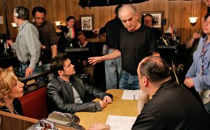

Los soprano
Los Soprano (en inglés The Sopranos) fue una serie de televisión estadounidense creada y producida por David Chase y HBO. La serie se estrenó en Estados Unidos el 10 de enero de 1999 por el canal de televisión por cable HBO, que la emitió ininterrumpidamente hasta su desenlace, el 10 de junio de 2007. La trama de la serie gira en torno al mafioso de Nueva Jersey Tony Soprano (James Gandolfini) y las dificultades que enfrenta tanto en su hogar como en la organización criminal que dirige. A su vez, la serie también se centra en la historia de los personajes cercanos a Tony, especialmente su esposa Carmela (Edie Falco) y su sobrino y protegido Christopher Moltisanti (Michael Imperioli).
El rodaje de la serie se hizo entre los Silvercup Studios de Nueva York y diversos escenarios del estado de Nueva Jersey. Los productores ejecutivos a lo largo de su emisión fueron Chase, Brad Grey, Robin Green, Mitchell Burgess, Ilene S. Landress, Terence Winter y Matthew Weiner.
Un éxito crítico y comercial, Los Soprano es una de las series por cable económicamente más exitosa en la historia de la televisión y frecuentemente ha sido descrita por la crítica como una de las mejores series de televisión de todos los tiempos. La serie destaca por su alto nivel de calidad en todos los aspectos de producción y ha sido especialmente reconocida por su guion y por las actuaciones de sus actores principales. Los Soprano ha sido acreditada por brindar un gran nivel artístico a la televisión media y allanar el camino para el éxito de muchas series de ficción que le siguieron. También ha ganado numerosos premios y reconocimientos, entre ellos, veintiún Premios Emmy y cinco Globos de Oro. En 2009 fue elegida la mejor serie de los años 2000 por la publicación The Hollywood Reporter. Además de los elogios y los premios, la Writers Guild Association la seleccionó como la serie mejor escrita de la historia en el top de "Las 101 series mejor escritas de la historia de la TV". En septiembre de 2016 la revista Rolling Stone elaboró la lista de "Las 100 mejores series de TV de todos los tiempos", donde Los Soprano ocupó el primer lugar.
Elemento básico de la cultura popular estadounidense del siglo XXI, Los Soprano ha sido objeto de parodias, controversias y análisis, y ha dado lugar a libros, un videojuego, exitosas bandas sonoras y una gran cantidad de merchandising.4 Varios de los actores y miembros del equipo de rodaje eran desconocidos para el público general, pero sus carreras experimentaron un gran éxito tras Los Soprano.
Argumento
Tony Soprano, italo-americano de Nueva Jersey, está estresado e insatisfecho, atravesando una crisis de la mediana edad.
El personaje de Tony Soprano se construye desde la revisión de los modelos fundacionales de la historia del cine de gánsteres que están presentes desde la cita directa o indirecta, imitaciones, chistes, y toda clase de referencias (la imitación constante de Michael Corleone que realiza el personaje de Silvio, las charlas sobre El padrino, la proyección de El enemigo público, etc.). Son héroes de ascenso y caída trágica, héroes clásicos de los cuales Tony es un reflejo distorsionado y disgregado. Su imposibilidad de mantener a sus dos familias en armonía y según los códigos de la tradición lo piden lo son la causa de los ataques de pánico que lo llevarán al psicoanálisis. La presencia de una madre castradora y autoritaria que conspira contra su propio hijo, su tío que es su principal rival en los negocios y también conspira contra él junto con su madre, los conflictos generacionales con sus hijos y los problemas de comunicación con su esposa son algunos de los ejes de su terapia y de la serie. Y por el lado de la familia mafiosa, la lucha por el poder como consecuencia de la muerte por cáncer del jefe, Jackie Aprile, y más adelante los problemas con las familias de Brooklyn. A diferencia de la mayoría de las historias de mafiosos, Los Soprano no transcurre en Nueva York o Chicago sino en Nueva Jersey, cuya geografía se nos invita a recorrer con los títulos iniciales de cada capítulo. Frente a los grandes negocios mafiosos aparece el del reciclaje de basuras. Otro de los grandes temas que recorre la espina de la serie es la esencia y los conflictos del italo-americano en Estados Unidos, como otra forma de problematizar el tema de la identidad (tanto individual como grupal, y en las dos familias).
A partir de estas bases, el autor David Chase estudia con precisión de cirujano la condición humana y los conflictos morales y existenciales de nuestra época, poniendo en primer plano al hombre solo haciendo frente al mundo y al paso del tiempo.
Concepción
Antes de crear Los Soprano, David Chase había trabajado como guionista durante veinte años. Trabajó como guionista y productor en varias series de televisión (incluidas Kolchak: The Night Stalker, The Rockford Files, I'll Fly Away y Doctor en Alaska) y fue uno de los creadores de la efímera serie Almost Grown, en 1988. Antes de su éxito con Los Soprano, Chase ganó dos Premios Emmy: uno en 1980 por el guion del telefilme Off the Minnesota Strip, y otro en 1978 por su trabajo en The Rockford Files (compartido con otros productores).
La historia de Los Soprano fue inicialmente concebida como un largometraje sobre "un mafioso en terapia que tiene problemas con su madre". Tras algunas aportaciones de su mánager, Lloyd Braun, Chase decidió adaptarlo a una serie de televisión. En 1995, Chase firmó un contrato con la compañía de producción Brillstein-Grey y escribió el guion original del episodio piloto. Basándose en gran medida en su vida personal y en sus experiencias creciendo en Nueva Jersey.
Chase aseguró que trató de "aplicar [su propia] dinámica familiar a los mafiosos".
Por ejemplo, la tormentosa relación entre el protagonista Tony Soprano y su madre, Livia, se basa, en gran parte, en la relación de Chase con su propia madre. Durante esa época, Chase también fue a terapia y modeló el personaje de la Dra. Jennifer Melfi a partir de su propio psiquiatra. Desde temprana edad, Chase ya había mostrado interés en la mafia tras crecer con clásicas películas de gánsteres como El enemigo público y la serie Los Intocables. En gran medida, la historia de la serie está inspirada en la auténtica Familia criminal DeCavalcante, que se convirtió en la principal familia del crimen organizado de Nueva Jersey durante la juventud de Chase. El nombre de la serie, por otra parte, proviene de unos amigos suyos del instituto. Chase pensaba que el escenario de la mafia le permitiría explorar temas como la identidad italoestadounidense y la naturaleza de la violencia, entre otros. El propio Chase es de ascendencia italiana y su apellido real es DeCesare.
Chase y el productor Brad Grey, de Brillstein-Grey, ofrecieron Los Soprano a varias cadenas. FOX mostró interés, pero decidieron rechazar la propuesta después de que Chase les presentara el episodio piloto. Chase y Grey finalmente ofrecieron la serie al entonces director de contenidos de HBO, Chris Albrecht, que reconoció la originalidad y el potencial de Los Soprano, y decidió financiar el rodaje de un episodio piloto. Albrecht dijo:
“Me dije, esta serie trata sobre un tipo en torno a los cuarenta años. Ha heredado el negocio de su padre y está tratando de modernizarlo a nuestros días, con todas las responsabilidades que ello implica. Tiene una madre autoritaria de la cual aún trata de escaparse. A pesar de que ama a su esposa, ha tenido una aventura. Tiene dos hijos adolescentes y está haciendo frente a la realidad que ello conlleva. Está preocupado y deprimido, y comienza a ver a una terapeuta porque está buscando el significado de su propia vida. Pensé: la única diferencia entre él y toda la gente que conozco es que él es el Don de Nueva Jersey.”
El episodio piloto —llamado "The Sopranos" en el DVD pero referido comúnmente como "Piloto"— fue filmado en 1997. Chase, tras haber dirigido anteriormente episodios de The Rockford Files y Almost Grown, lo dirigió él mismo. Una vez finalizado el episodio piloto y tras mostrarlo a los directivos de HBO, la serie quedó a expensas, durante un año, de que HBO finalmente decidiera producirla y ordenara una temporada completa de trece episodios. La serie se estrenó en HBO el 10 de enero de 1999, con el episodio piloto. Los Soprano fue la segunda serie de drama de una hora de duración producida por HBO, que tomó el relevo de Oz.